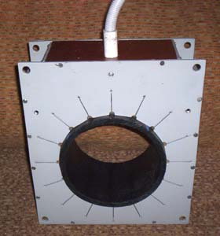
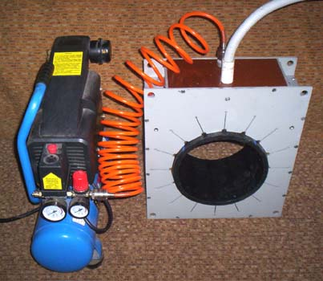

Демагнетизатор стали
туннельного типа
с диаметром проходного отверстия 200 мм

Размагничивание стальных изделий может быть произведено посредством переменного магнитного поля с затухающей амплитудой [3]. Для создания переменного магнитного поля можно использовать соленоид, подключенный к источнику переменного напряжения. При перемещении размагничиваемого изделия через центральное отверстие соленоида и удалении от него происходит затухание амплитуды магнитного поля. Ранее существовавший порядок доменной структуры ферромагнетика разрушается, и стальное изделие размагничивается.
Назначение
Демагнетизатор стали представляет из себя соленоид с проходным отверстием диаметром 200 мм. Он позволяет размагничивать стальные заготовки, детали, инструмент, трубы при транспортировке их через проходное отверстие (туннель). Для охлаждения соленоида демагнетизатора может быть использован воздушный компрессор.
Технические данные:
Для контроля магнитной индукции в туннеле демагнетизатора применялись тесламетры [2].
Способ применения
Демагнетизатор устанавливается на рабочей поверхности в произвольном положении и при необходимости закрепляется. Соленоид демагнетизатора подключаются к сети переменного тока напряжением 220 В частотой 50 Гц со стандартными защитными устройствами или к преобразователю напряжения. Внешний воздушный компрессор посредством шланга подключается к штуцеру на корпусе демагнетизатора. Размагничивание стальных изделий производится посредством транспортировки их через проходное отверстие демагнетизатора. Оптимальная скорость транспортировки подбирается по результатам контроля качества размагничивания.

Для оперативного контроля качества размагничивания могут быть применены подручные мелкие стальные предметы: опилки, стружка, гвоздики, предварительно также размагниченные. Более тщательное исследование качества размагничивания можно произвести с помощью супервизора [1], тесламетра или микротесламетра [2], а также магнитного флюксметра (веберметра).
Ссылки:
05.09.2012
Альтернативные источники
энергии
Компьютеры и
Интернет
Магнитные поля
Механотронные системы
Перспективные
разработки
Электроника и
технология